reposition_slurs
- auxjad.mutate.reposition_slurs(selection: Selection, *, allow_slurs_under_rests: bool = False, close_unterminated_final_slur: bool = True) None[source]
Mutates an input
abjad.Selectionin place and has no return value; this function repositions all slurs that starts or ends on rests.- Basic usage:
This function will shift slurs that ends on rests to the previous pitched leaf.
>>> staff = abjad.Staff(r"c'1( d'2 r2) r1 e'1") >>> abjad.show(staff)
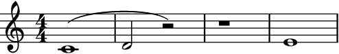 >>> staff = abjad.Staff(r"c'1( d'2 r2) r1 e'1") >>> auxjad.mutate.reposition_slurs(staff[:]) >>> abjad.show(staff)
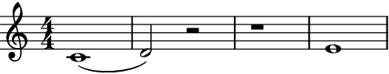
Note
Auxjad automatically adds this function as an extension function to
abjad.mutate. It can thus be used from eitherauxjad.mutateorabjad.mutatenamespaces. Therefore, the two lines below are equivalent:>>> auxjad.mutate.reposition_slurs(staff[:]) >>> abjad.mutate.reposition_slurs(staff[:])
- Rests:
Slurs starting on rests are shifted to the next pitched leaf.
>>> staff = abjad.Staff(r"c'1 r2( d'2 e'1)") >>> abjad.show(staff)
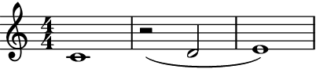 >>> staff = abjad.Staff(r"c'1 r2( d'2 e'1)") >>> auxjad.mutate.reposition_slurs(staff[:]) >>> abjad.show(staff)
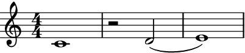 - Multiple rests:
This function also works when multiple rests are present.
>>> staff = abjad.Staff(r"c'1( d'2 r2 r1) e'1") >>> abjad.show(staff)
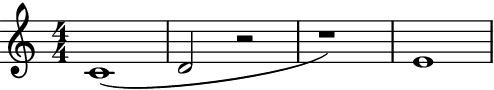 >>> staff = abjad.Staff(r"c'1( d'2 r2 r1) e'1") >>> auxjad.mutate.reposition_slurs(staff[:]) >>> abjad.show(staff)
allow_slurs_under_rests:By default, a slur crossing a rest is broken into two.
>>> staff = abjad.Staff(r"c'1( d'2 r2 e'1 f'1)") >>> auxjad.mutate.reposition_slurs(staff[:]) >>> abjad.show(staff)
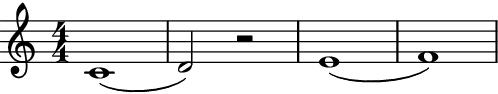 Set the optional keyword argument
allow_slurs_under_reststoTrueto allow slurs under rests.>>> staff = abjad.Staff(r"c'1( d'2 r2 e'1 f'1)") >>> auxjad.mutate.reposition_slurs( ... staff[:], ... allow_slurs_under_rests=True, ... ) >>> abjad.show(staff)
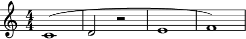 close_unterminated_final_slur:By default, unterminated slurs at the end of the selection are closed when possible or removed when not.
>>> staff = abjad.Staff(r"c'1( d'2 r2 e'2 f'2) g'1( a'1") >>> auxjad.mutate.reposition_slurs(staff[:]) >>> abjad.show(staff)
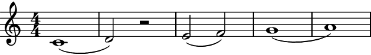 Set the optional keyword argument
close_unterminated_final_slurtoFalseto disable this behaviour.>>> staff = abjad.Staff(r"c'1( d'2 r2 e'2 f'2) g'1( a'1") >>> auxjad.mutate.reposition_slurs( ... staff[:], ... close_unterminated_final_slur=False, ... ) >>> abjad.show(staff)
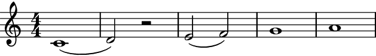 When there are no pitched leaves left after an unterminated open slur, it is removed.
>>> staff = abjad.Staff(r"c'1( d'2 r2 e'2 f'2) g'1( r1") >>> auxjad.mutate.reposition_slurs(staff[:]) >>> abjad.show(staff)
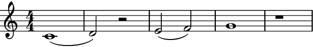
Note
Duplicate slur starts or stops are removed. Note that the score output will not change, as LilyPond also ignores duplicate slurs, but the output in the
.lyfile will be cleaner.>>> staff = abjad.Staff(r"c'1( d'2) e'2) f'2( g'2( a'1)") >>> auxjad.mutate.reposition_slurs(staff[:]) >>> abjad.show(staff)
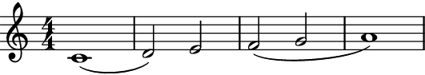 Warning
The input selection must be a contiguous logical voice. When dealing with a container with multiple subcontainers (e.g. a score containing multiple staves), the best approach is to cycle through these subcontainers, applying this function to them individually.